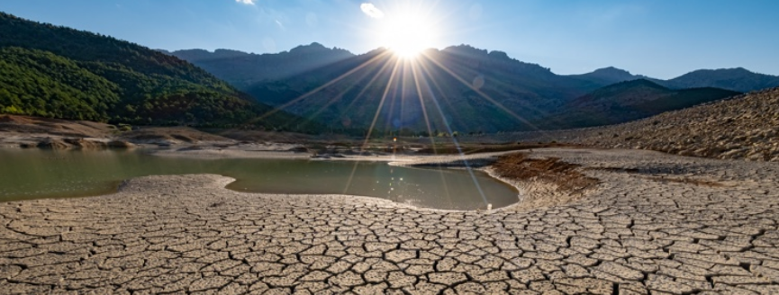
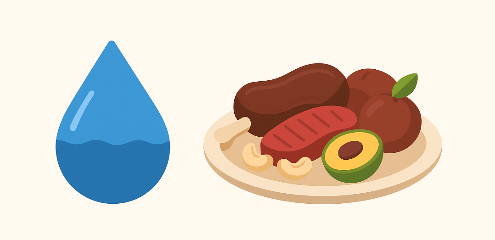

A química do Sertão está intimamente ligada aos seus maiores desafios: o solo e a água.
Analisaremos a composição química do solo, frequentemente rico em minerais, mas pobre em matéria orgânica,
e discutiremos os processos de salinização.
Composição do Solo
A composição química do solo do Sertão varia, mas geralmente é rico em minerais e nutrientes, embora possa ser pobre em matéria orgânica
e com textura arenosa ou argilosa, dependendo da localidade, como nos solos do INSA e Fiocruz, e pode apresentar pH entre 5,3 e 8,3.

Água e Alimentos
A água é o recurso mais valioso da região. A água pode ter alta salinidade
ou ser escassa, com teores de minerais dissolvidos variando conforme a fonte.
Alimentos típicos como a carne de bode são ricos em proteínas e gorduras, a carne de sol
é rica em sais e proteína, e frutas como o umbu e a castanha de caju contêm açúcares, vitaminas
e gorduras.

A Química na Produção Artesanal
No Sertão nordestino, processos artesanais como a produção de cachaça envolvem reações
químicas como a oxidação de metais no alambique, e a fermentação no processo de formação dos aldeídos.
Outras reações comuns incluem a fermentação de açúcares para produzir álcool e a destilação para separar
componentes voláteis, que também podem gerar compostos indesejados se não controlados.